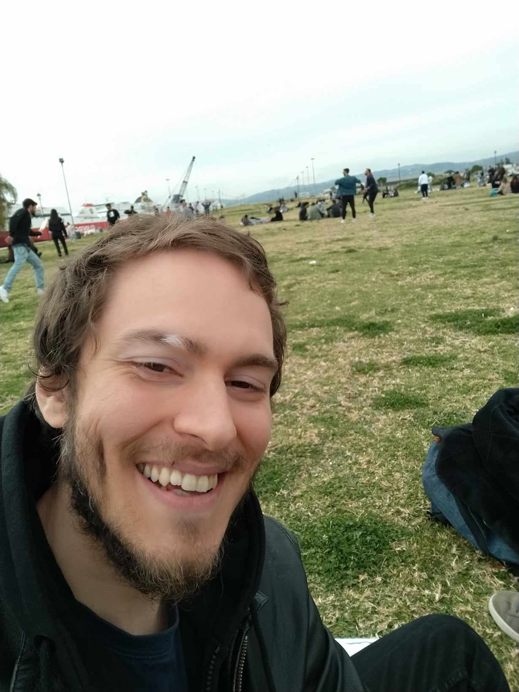

Kyriakos Zafeiropoulos

Summary
Just a chill, free-spirited guy with many goals and inspirations. Also a future interprenuer in coding.
Highly intelligent, artistic and conspiracy theorist as well. What a great smile also...
Education
- College Studies on Web develpoment/Design, Video Games and Multimedia (2018-2020)
- Bachelor on History Archeology and Cultural Resources Managment (2010-2015)
- Military Service Obligations Fullfilled
Work Experience
- Confectioner, Baker - Donuts Katsaros (2023-2024)
- Internship - New Media Soft (2020-2021)
- Internship - Greek Modern Art Gallery
Skills
- Fluent in Greek (Mother Tongue) and English (C2 level of knowledge)
- Microsoft Office Suit (Word, Internet, Power Point, Excel)
- Photoshop
Awards and Accomplishments
- 2nd price in the first literature competition "Νάκος Κληρόπουλος" by the Messinians Writers Association
Other